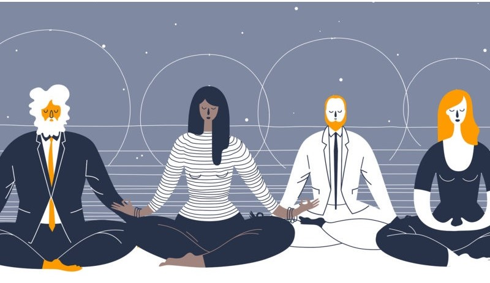
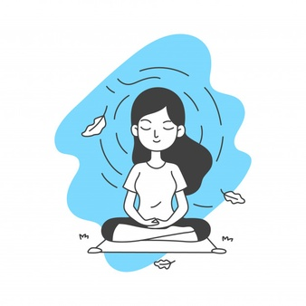
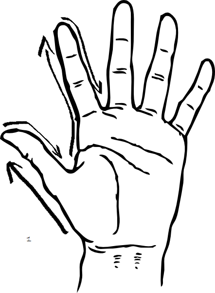

Что это такое? Суть традиционной медитации заключается в том, чтобы полностью сконцентрироваться
на дыхании и проследить за ритмом вдохов и выдохов. Концентрация на дыхании позволяет
наблюдать за мыслями по мере из появления и постепенно переставать бороться с ними.
|
 |
|  |
Полезность медитации
|
Можете сесть в позу лотоса, либо просто на стул. Держите спину прямо. Поставьте таймер на 3 минуты(лучше начать с малого). Сосредоточтесь на дыхании.
Закройте глаза.
Пальцем одной руки проведите по пальцам другой руки. Если вверх - вдох, если вниз - выдох
|
|